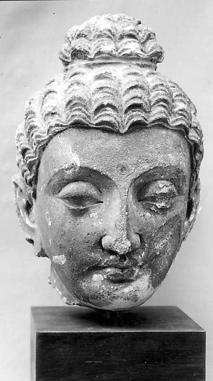

CORE / KNOWLEDGE
十二因縁とは何か
十二因縁は、無明から老死までを十二支で示す縁起の代表的な定式です。単純な一方向の時間表ではなく、苦が成立する条件連鎖を読むための枠組みです。

01
無明から行へ
現実を正確に見ないことが、習慣的な形成作用を支えます。
02
接触・受・渇愛
対象との接触から感受が生じ、それを快不快で握ると渇愛が強まりやすくなります。
03
連鎖は観察できる
日常では「嫌な言葉→不快→反発したい→執着→行動」という短い連鎖として観察すると理解しやすくなります。
DEPTH NOTES
十二因縁とは何かをもう一段深く読む
十二因縁は十二個の出来事が一回だけ順番に起こる年表ではありません。無明・渇愛・取などがどう苦の継続条件になるかを見るモデルとして、現在の経験の中でも検討できます。
原典・参照：SN 12.2